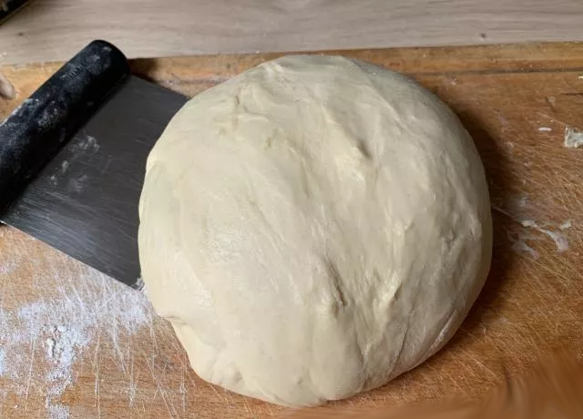
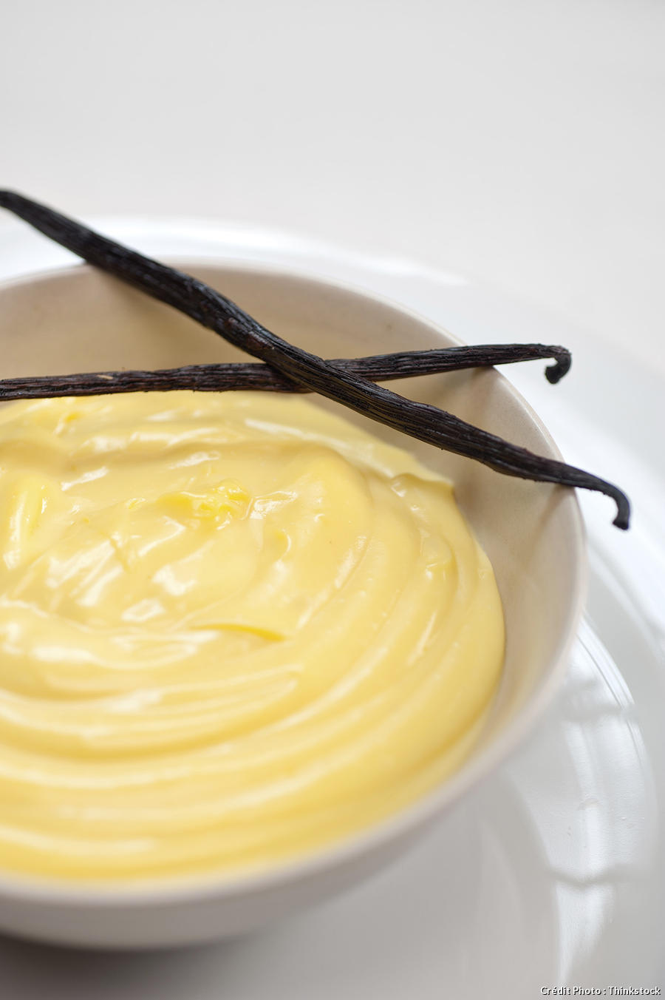

Pour 500g de pâte de pain au lait : 10g de levure boulanger 115g de lait 250g de farine type 45 30g de sucre semoule 1 cuillerée à café de sel fin 1 œuf 115 de beurre à température ambiante
+--------------------------------------+ |Temps de préparation : 30 minutes | |Temps de pousse : 3 heures | |Temps de repos de la pâte : 2 heures | |Temps de cuisson : 8 à 10 minutes | +--------------------------------------+
Description : Mettez de la levure dans le fond d'un récipient, puis versez dessus le lait. Mélangez à l'aide d'une spatule afin de bien dissoudre la levure. Recouvrez avec la farine. Ajoutez le sucre et le sel et, ensuite, l'œuf. Mélangez avec la spatule durant 1 à 2 minutes, de manière à obtenir une pâte ferme. Incorporez le beurre à la pâte en malaxant bien à la main. Enfin, travaillez la pâte vigoureusement à la main ou à la spatule durant 5 à 6 minutes.

Pour 350 g de crème patissière : 25 cl de lait entier 1 cuillerée à a café de beurre 1/2 gousse de vanille (au choix) 2 jaune d'œufs 50 g de sucre semoule 20 g de Maïzena 1 cuillerée à soupe rase de farine
+-----------------------------------------+ |Temps de préparation : 15-20 minutes | |Temps de pousse : Aucun | |Temps de repos de la pâte : 2 à 4 heures | |Temps de cuisson : Aucun | +-----------------------------------------+
Description : Faites chauffer sur feu moyen le lait et la cuillerée à café de beurre dans une casserole. Ajoutez, si vous le souhaitez, la demi-gousse de vanille fendue en deux et grattée. Mélangez ensemble au fouet les jaunes d'œufs et le sucre semoule. Ajoutez la Maïzena et la farine tout en fouettant. Lorsque le lait arrive à ébullition, retirez la gousse de vanille et versez le liquide chaud sur le mélange précédent tout en fouettant. Reversez cette préparation dans la casserole sans cesser de remuer et faites cuire sur feu moyen jusqu'a ce que la crème épaississe. Dès que la crème est cuite, versez-la dans un récipient bien propre, recouvrez-la d'un film alimentaire et placez-la au réfrigérateur.

Pour 12 à 15 triangle environs : 500 g de pâte à pain au lait 200 g de crème patissière 60 g de noissettes brutes 60 g d'amandes entières 60 g de noix Pour la dorure : 1 œuf entier 1 jaune d'œuf
+--------------------------------------+ |Temps de préparation : 30 minutes | |Temps de pousse : 2 h 30 | |Temps de repos de la pâte : 1 heures | |Temps de cuisson : 12 à 15 minutes | +--------------------------------------+
Description : Après avoir réalisé la pâte à pain au lait, laissez-la pousser durant 1 heure à température ambiante recouverte d'un torchon. Aplatissez-la sur votre plan de travail fariné en lui donnant une forme triangulaire. Enveloppez-la de film alimentaire et laissez-la reposer pendant au moins 1 heure au réfrigérateur. Ensuite après avoir réalisé votre pâte patissière, laissez-la refroidir au réfrigérateur. Hachez grossièrement tout vos fruits sec et mettez-les dans un récipient. Une fois la crème patissière refroidie, travaillez-la au fouet pour la rendre plus lisse et plus facile à utiliser. Suite à sa pour réaliser les triangles : étalez la pâte au rouleau sur votre plan de travail fariné. Vous devez obtenir un grand rectangle de ~4 mm d'épaisseur. Pliez-le en 2 dans la longueur et dépliez-le pour savoir le milieu. Répartissez la crème patissière à la cuillère sur une moitié de la pâte et lissez-la avec un spatule. Saupoudrez la crème du mélange de fruits secs en les répartissant bien. Pliez la pâte nature sur la pâte à la crème. Lissez bien à la main pour faire évacuer les bulles d'airs, s'il y en a. Faire glisser ce grqnd rectqngle sur une plaque recouverte de papier sulfurisé. Laissez pousser recouvert de film alimentaire durant ~2h30 à température ambiante.
Pour des pancakes : 250 g de farine 30 g de sucre semoule 2 œufs 1 sachet de levure traditionnelle 65 g de beurre doux 1 pincée de sel 30 cl de lait
+--------------------------------------+ |Temps de préparation : 5-10 minutes | |Temps de pousse : Aucun | |Temps de repos de la pâte : 1 heures | |Temps de cuisson : 4 minutes | +--------------------------------------+
Description : Faire fondre le beurre dans une casserole à feu doux ou dans un bol au micro-ondes. Mettre la farine, la levure et le sucre dans un saladier, puis, mélangez et creuser un puits. Ajouter ensuite les œufs entiers et fouetter l'ensemble. Incorporer le beurre fondu, fouetter puis délayer progressivement le mélange avec le lait afin d'éviter les grumeaux. Laisser reposer la pâte au minimum 1 heure au réfrigérateur. Dans une poêle chaude et légèrement huilée, faire cuire comme des crêpes, mais en les faisant plus petites. Enfin réserver au chaud et déguster.